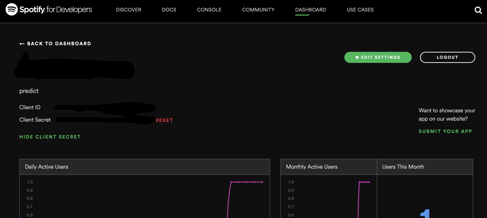
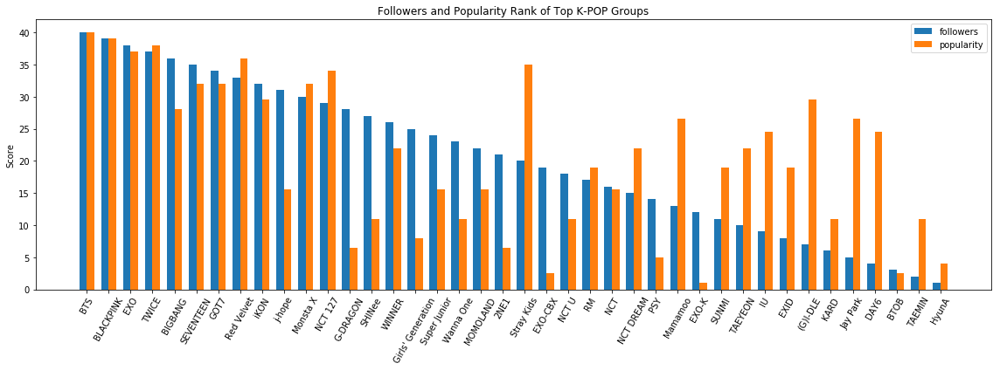
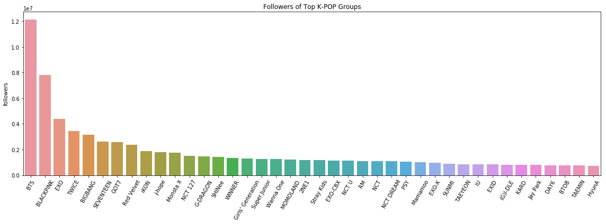
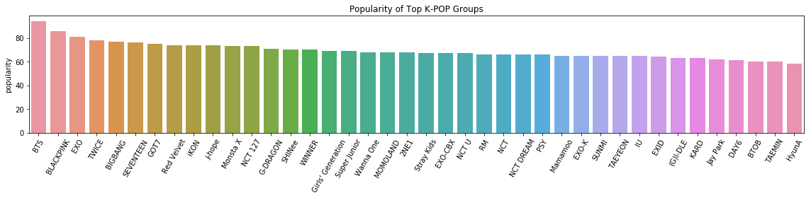
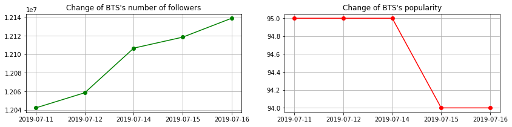
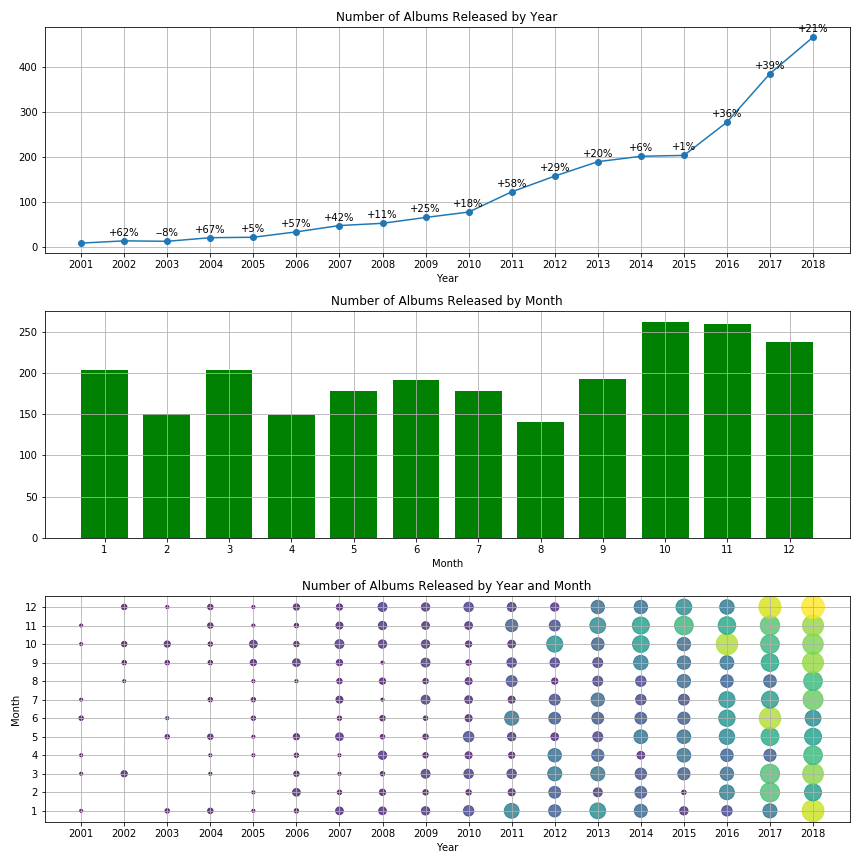
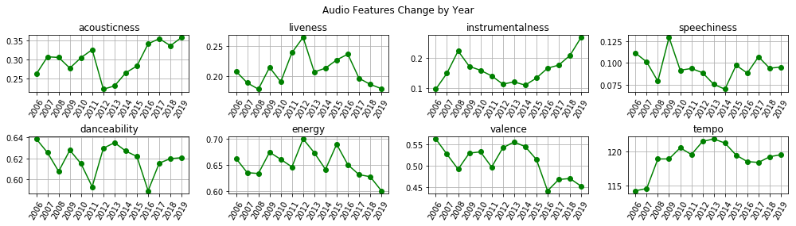

Introduction
K-pop has become a phenomenon in the U.S, as evidenced by bombing number of K-pop shows across the nation. In Spotify's K-pop genre, there are more than 500 K-pop artists. Among them, the wildly popular male group BTS is certainly worth mentioning. According to the data of Top 100 selling artists in the first half of 2019, out of 10 album copies sold out, there are 4 of BTS's albums (Ref).
BTS is certainly a reason for the rise of K-pop, but as more and more K-pop artists successfully hit the Billboard charts and took massive world tour, K-pop is definitely a hot topic to dig into.
This K-Pop sensation draws my attention to perform data analysis using data provided by Spotify API which could be used to answer some interesting questions like:
- Besides BTS, who are the best K-pop artists in the U.S. market?
- How do their popularity change?
- How did the market of K-pop music evolve in size and audio features?
Setup
Register an app:
Just like my last project which used Twitter API, the first step is to register an app on Spotify for Developers, then copy Client ID and Client Secret.

Install Spotify Web API Python library:
1 | pip install spotipy |
Please check spotipy's document for more detail.
Download all relevant data to local machine
I firstly wrote a class MySpotify to grab all relevant data and stored the data under local machine in json format.
Relevant data:
- All artists' information under 'k-pop' genre;
- All albums' information of every k-pop artists
- All tracks' information of all albums of every k-pop artists
- Audio features provided by Spotify of all tracks
Audio features:
There are 8 main audio features provided by Spotify. Here's the explanation from Spotify's document.
- Danceability describes how suitable a track is for dancing based on a combination of musical elements including tempo, rhythm stability, beat strength, and overall regularity.
- Energy is a measure from 0.0 to 1.0 and represents a perceptual measure of intensity and activity.
- Instrumentalness predicts whether a track contains no vocals.
- Liveness detects the presence of an audience in the recording.
- Loudness: the overall loudness of a track in decibels (dB).
- Speechiness detects the presence of spoken words in a track.
- Valence: A measure from 0.0 to 1.0 describing the musical positiveness conveyed by a track.
- Tempo: the overall estimated tempo of a track in beats per minute (BPM).
1 | class MySpotify(object): |
Data Analysis
1. Who are the most popular K-pop artists?
Before we jump to the answer, let me take a second to introduce two measures of prevelance in Spotify.
- Followers: The number of people following the artist.
- Popularity: The popularity of the artist. The value will be between 0 and 100, with 100 being the most popular. The artist’s popularity is calculated from the popularity of all the artist’s tracks.
There are cases when some artists have a large amount of followers, but relatively low popularity. That's possibly because they are not active in releasing new songs recently or simply retired from musical life.
To find the hottest K-pop artists, I extracted all artists' followers and popularity data, ranked them, and visualized top 40 artists in terms of the number of followers.

In Fig 1, for artists with orange bar higher than blue bar, some of them are hot, recently debuted K-pop groups, like (G)I-DLE, NCT 127, Stray Kids; most of them released new songs in recent month, e.g. Jay Park released his new EP "Nothing Matters" this month.
For artists with orange bar lower than blue bar, some of them are inactive for a long time, such as G-Dragon who is serving compulsory military duty; some of them are temporary group or solo which only released one or two albums, like EXO-CBX, J-hope.
Ranking could be sometimes misleading. As 4 out of 10 album copies sold out are BTS's albums, what if this K-pop phenomenon is actually BTS phenomenon? Let's check the numerical number of followers and popularity of these K-pop artists.


From Fig 2 & 3, we can see that BTS has more than 1/3 followers than the second hottest group, and more than 1/2 followers than the third one. In addition, BTS has an popularity rate of 99, very close to 100, the highest possible popularity rate.
For comparison, I listed some top artists in the U.S. market:
| Artists | Followers | Popularity |
|---|---|---|
| Ed Sheeran | 47,295,649 | 100 |
| Drake | 38,673,834 | 99 |
| Taylor Swift | 21,198,450 | 93 |
| Ariana Grande | 32,355,391 | 95 |
Comparing the top K-pop artists and the top U.S. mainstream artists, except from BTS, other K-pop artists' could hardly be labelled as top stars in the U.S. Even BTS who have amazingly high popularity, they have significantly less followers.
In my point of view, before BTS rising to fame, K-pop is only a subculture in the U.S., and not usually depicted by western mainstream media. Today, whether K-pop has become a mainstream phenomenon is still open to debate. At least the far less followers of most of the K-pop artists is an evidence against this argument.
2. How does popularity change?
Since Spotify does not provide historical data of artists' popularity and followers, I write a class Popularity to grab everyday's data, upload to AWS DynamoDB.
1 | class Popularity(MySpotify): |
The ETL process works like this:

- Grab artists' data from Spotify API;
- Organize and clean the data;
- Save data to local machine in json format;
- Save data to AWS DynamoDB.
Here is a visualization of the change of BTS' followers & popularity using data collected during writing this report.

3. How many K-pop albums released every year?
As an industry, K-pop has experienced significant increase in size over the past two decades. According to each music agent companies' marketing tactics, K-pop artitists will demonstrate certain pattern in terms of the timing of releasing new albums.
Here is a visualization of the number of albums released by year and by month. We can see a sharp increase from 2016 to 2018. Also artists seem to be more active during October and November.

4. Audios' features analysis
To analyze audio features, I wrote a class Analyze to wrap to ETL process and analysis functions.
1 | class Analyze(object): |
The ETL process works like this:
As last chapter says, I extracted 8 audio features of all tracks. I calculated the truncated average of each feature by year, and try to find some changes in the K-pop music itself.

We can see features like acousticness, and instrumentalness have an upward trend; while energy, tempo and valence have un downward trend in recent years.
The evolution of K-pop music is not smooth. It seems it has experienced a radical shift around 2013 (2012-2014), as most of the features changed their disposition. After 2013 or 2014, the K-pop songs:
- Become more and more acoustic, and instrumental.
- Contain more spoken words.
- Convey less energy and positiveness. In other words, they sound less cheerful but more sad and depressed.
- Become a bit slower in tempo.
- Are still highly danceable, but not as danceable as before 2014.